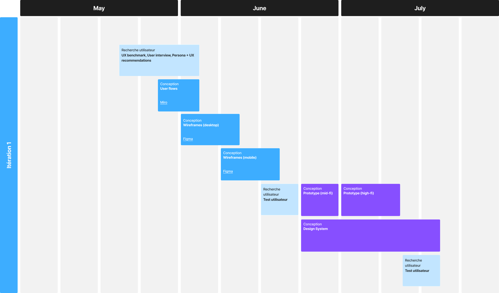
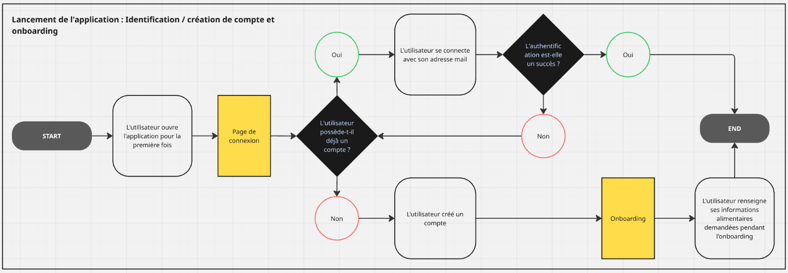
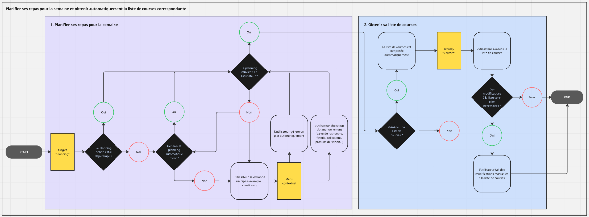
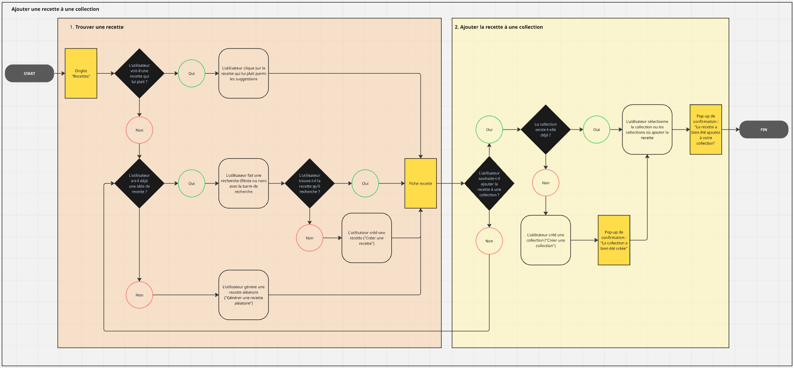

CookPal
Conception d'une application d'automatisation de la gestion des repas.
Catégorie : Projet personnel
Période : Mai - Juin 2025
Format : Mobile, Desktop
Organiser les repas de la semaine, faire les courses, éviter le gaspillage, manger équilibré, varier les plats… autant de micro-décisions qui, répétées jour après jour, finissent par peser lourd dans la charge mentale domestique.
C’est en partant de ce constat vécu au quotidien dans mon propre foyer que j’ai initié ce projet personnel : concevoir une application qui automatise au maximum la gestion des repas pour simplifier la vie des utilisateurs.
Ma mission :
Concevoir une application centrée sur l’utilisateur qui permettra de :
- alléger significativement la charge mentale liée aux repas (planification et courses),
- favoriser une alimentation de saison, saine et moins gaspilleuse,
et tout cela dans un usage domestique quotidien, pensé pour être à la fois fluide, intelligent et personnalisé.
Roadmap prévisionnelle
Entretien utilisateur
As-tu un système de gestion des repas en place actuellement ?
Oui : un fichier Google Sheet, avec un onglet “Recettes” et un onglet “Planning”. Le problème principal réside dans l’impossibilité d’automatiser la planification des repas, de devoir remplir le planning soi-même tous les 3-4 jours. La liste de courses est établie manuellement sur Listonic.
Y a-t-il des moments où tu te retrouves sans idée de repas ? Que fais-tu dans ces cas-là ?
- “S’inspire des plats dernièrement cuisinés” (→ besoin de varier davantage les repas)
- “Demande de l’aide à une IA” (→ délégation de la partie planification des repas)
- “Achète des plats industriels ou commande à manger par manque d’idées et de temps” (→ besoin de manger plus sain)
Qu’est-ce qui te frustre le plus dans la gestion des repas à la maison ?
- “Tous les jours devoir se demander quoi faire à manger” (→ besoin d’alléger la charge mentale quotidienne)
- “Finir par faire toujours la même chose à manger” (→ besoin de varier davantage les repas)
- “Trouver le temps d’aller faire les courses et de cuisiner après une journée déjà bien chargée” (→ besoin d’automatisation des tâches et d’une meilleure organisation/gestion du temps)
Quels sont les critères importants dans tes choix de repas au quotidien ?
- “Consommer des produits de saison” (→ adapter les plats suggérés en fonction des saisons)
- “Éviter si possible les aliments irritants (intolérances alimentaires), mais pouvoir quand même se faire plaisir de temps en temps” (→ limiter les recettes avec aliments irritants sans les bannir totalement des suggestions)
As-tu déjà essayé des applis ou services pour gérer les repas ou faire les courses ? Qu’en as-tu pensé ?
- Jow : Performant sur la partie courses, mais moins sur la partie planification.
- KptnCook : Application payante, pas de version desktop.
- Mealime : Seulement en anglais.
Proto-persona
A., le jeune actif pressé
- Âge : 28 ans
- Profession : Développeur
- Situation familiale : Vit en couple
- Style de vie : Très occupé, journées chargées
- Contraintes : Peu de temps, manque d’idées
- Comportements : Achète souvent à la supérette du coin ou commande à emporter, préfère des plats de saison et rapides à cuisiner car manque de temps
- Passer le moins de temps possible sur la gestion des repas
- Manger de saison
- Réduire les plats industriels et le fast-food
- Fatigué de devoir tout le temps réfléchir à quoi manger
- Se lasse vite de cuisiner et manger toujours les mêmes plats
Benchmark UX
| Jow | KptnCook | Mealime | |
|---|---|---|---|
| Slogan | Jow, l’appli qui fait les courses et aide à faire à manger | Discover the joy of effortless cooking. | Plan your meals for the entire week in minutes. |
| Supports | ✔️ Mobile, Desktop | ✖️ Mobile only | ✔️ Mobile, Desktop |
| Navbar | Courses, Explorer, Offres, Profil | Aujourd’hui, Chercher, Favoris, Planning, Courses | Meal plan, Groceries, Favorites, Settings |
| Collaboration | ✖️ Non | ✔️ Oui | ✖️ Non |
| Personnalisation | Onboarding :
✔️ Onboarding complet (nombre de personnes vivant dans le foyer, régime alimentaire, ingrédients à exclure, équipements de cuisine, objectifs) Repas :✔️ Suggestions de repas en fonction des préférences renseignées par l’utilisateur ✔️ Nombre de portions personnalisable au repas Recettes :✔️ Création de recettes maison (avec template à remplir manuellement) ✖️ Impossibilité d’importer une recette ✖️ Les recettes Jow ne peuvent pas être éditées par l’utilisateur (possibilité d’ajouter une ”note perso” seulement) |
Onboarding :
✖️ Onboarding limité en version gratuite (objectifs, régime alimentaire [omnivore ou végétarien seulement], ingrédients à exclure [alcool seulement], nombre de portions par repas) Repas :✔️ Suggestions de repas en fonction des préférences renseignées par l’utilisateur ✔️ Nombre de portions personnalisable au repas ✔️ Système de swiping ludique “J’aime/J’aime pas” Recettes :✖️ Impossibilité de créer des recettes maison ✖️ Les recettes ne peuvent pas être éditées par l’utilisateur (possibilité d’ajouter une ”note perso” seulement) |
Onboarding :
✖️ Onboarding partiel (diet, allergies, dislikes, portions par repas) Repas :✔️ Suggestions de repas en fonction des préférences renseignées par l’utilisateur ✔️ Nombre de portions personnalisable au repas Recettes :✔️ Création de recettes maison (avec template à remplir manuellement) ✔️ Possibilité d’importer une recette ✖️ Les recettes Mealime ne peuvent pas être éditées par l’utilisateur (possibilité d’ajouter une ”note perso” seulement) |
| Automatisation | Planification :
✔️ Ajout automatique de plats pour le nombre de recettes déterminé ✖️ Modification des repas uniquement manuelle Courses :✔️ Remplissage automatique du panier (modifiable manuellement) en fonction des repas planifiés, propose en plus de retirer les basiques susceptibles d’être déjà dans le placard ou frigo de l’utilisateur ✔️ Livraison ou retrait dans le supermarché le plus proche (cependant tous les supermarchés ne sont pas disponibles) |
Planification :
✖️ Ajout de repas uniquement manuel (mode “Surprenez-moi” uniquement en version payante) Courses :✔️ Remplissage automatique du panier (modifiable manuellement) en fonction des repas planifiés ✔️ Liste de courses sous forme de checklist, modifie automatiquement les quantités si les portions sont modifiées ultérieurement |
Planification :
✖️ Ajout de repas uniquement manuel Courses :✔️ Remplissage automatique du panier (modifiable manuellement) en fonction des repas planifiés ✖️ Liste de courses sous forme de checklist, ne modifie pas automatiquement les quantités si les portions sont modifiées ultérieurement |
| Planification | ✖️ Pas de vue calendrier ✖️ Fonctionnalité limitée : obligé de valider le panier de courses pour enregistrer le planning de repas (+ il faut atteindre un montant minimum pour pouvoir passer commande) |
✔️ Vue calendrier ✔️ Possibilité d’associer une recette à un ou plusieurs jours ✖️ Par défaut, ne propose qu’un seul repas par jour |
✔️ Vue calendrier ✔️ Possibilité d’associer un repas du planning à un jour ✖️ Fonctionnalité limitée : pas possible de planifier le même plat sur plusieurs jours par exemple |
| Fonctionnalités de recherche | ✔️ Collections/thématiques utiles (anti-inflammatoires, faibles en calories…) ✔️ Highlight sur les ingrédients de saison ✖️ Pas de filtres dans les recherches de recettes |
✖️ Pas de highlight sur les ingrédients de saison ✖️ Enormément de recettes verrouillées en version gratuite ✖️ Pas de filtres dans les recherches de recettes |
✖️ Pas de highlight sur les ingrédients de saison ✖️ Pas de filtres dans les recherches de recettes |
| Ergonomie | ✔️ UX globalement bonne, à condition de bien avoir en tête qu’il s’agit avant tout d’une application de courses ✖️ Enormément de scroll sur le catalogue, sentiment overwhelming |
✔️ UX globalement bonne ✖️ Onglet “Aujourd’hui” (qui propose un menu différent tous les jours) équivoque, on s’attend à voir les repas que l’on a programmés pour ce jour |
✖️ Fonctionnalités cachées (ex: ”Create a recipe” dans “Settings”, collections accessibles uniquement après avoir démarré un meal plan) |
| Look & feel | ✔️ UI soignée et dynamique | ✔️ UI soignée et dynamique | ✖️ UI terne et basique, un peu old-school |
| Forces | ✔️ Promos sur les paniers ✔️ Notes et commentaires de la communauté (dimension communautaire) ✔️ Lumière sur les produits de saison |
✔️ Application collaborative ✔️ Grande flexibilité des listes des courses en fonction des portions |
|
| Faiblesses | ✖️ Application lente ✖️ Application inutilisable à moins de se connecter avec l’un des supermarchés partenaires (ou essai gratuit) ✖️ Application essentiellement tournée sur les courses plus que sur la planification |
✖️ Version gratuite extrêmement limitée ✖️ Pas de focus sur les produits de saison ✖️ Pas de possibilité d’ajouter ses propres recettes ✖️ Disponible uniquement sur mobile |
✖️ Mauvaise architecture de l’information ✖️ Disponible uniquement en anglais |
Recommandations UX
Automatisation et flexibilité
- Automatiser tout ce qui est possible (génération de repas + liste de courses) tout en permettant un maximum de flexibilité à l’utilisateur (modifications manuelles et automatiques)
- Permettre à l’utilisateur d’indiquer ses jours d’absence pour que ces jours soient ignorés dans la génération de planning de repas
- Permettre à l’utilisateur d’indiquer les jours où le planning de repas n’a pas été respecté, pour que le planning soit décalé de X jours
- Saisonnalité : Privilégier les recettes de saison dans les suggestions + mise en avant des produits de saison dans le catalogue de recettes
- Changer automatiquement les quantités et les ingrédients dans la liste de courses si des modifications aux repas sont apportées (édition d'une recette, changemen du nombre de portions...)
Personnalisation
- Onboarding : nombre de personnes dans le foyer, nombre de portions par repas (restes ?), allergies alimentaires (ingrédients complètement bannis des suggestions), intolérances alimentaires (limiter ou bannir complètement des suggestions ?), aversions (limiter ou bannir complètement des suggestions ?), préférences (ingrédients, types de cuisine, etc. pour que des suggestions correspondantes soient plus souvent poussées à l’utilisateur)
- Intolérances et aversions indiquées par des tags de couleurs lorsque des ingrédients apparaissent dans des suggestions
- J’aime (la recette sera poussée à l’utilisateur dans les suggestions) / J’aime pas (la recette ne sera plus poussée à l’utilisateur dans les suggestions)
- Permettre à l’utilisateur d’éditer une recette existante (ingrédients, quantités, instructions...)
- Permettre à l’utilisateur de créer une recette (manuellement ou en en important une depuis une URL)
Collaboration
- Permettre à l’utilisateur d’inviter une personne de son foyer (viewer ou éditeur) pour qu’ils puissent partager les mêmes informations
Centralisation
- Proposer de compléter la liste de courses par des produits récurrents qui ne font pas partie des repas (fruits, apéro, produits ménagers, etc.) pour que toutes les courses soient réunies sur un seul espace
User flow
[Lancement de l’application] Identification / Création d’un compte et Onboarding :
Planifier ses repas pour la semaine et obtenir la liste de courses correspondante :
Ajouter une recette à une ou des collection(s) :
🚧 Work still in progress! 🚧